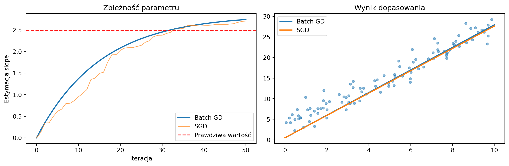
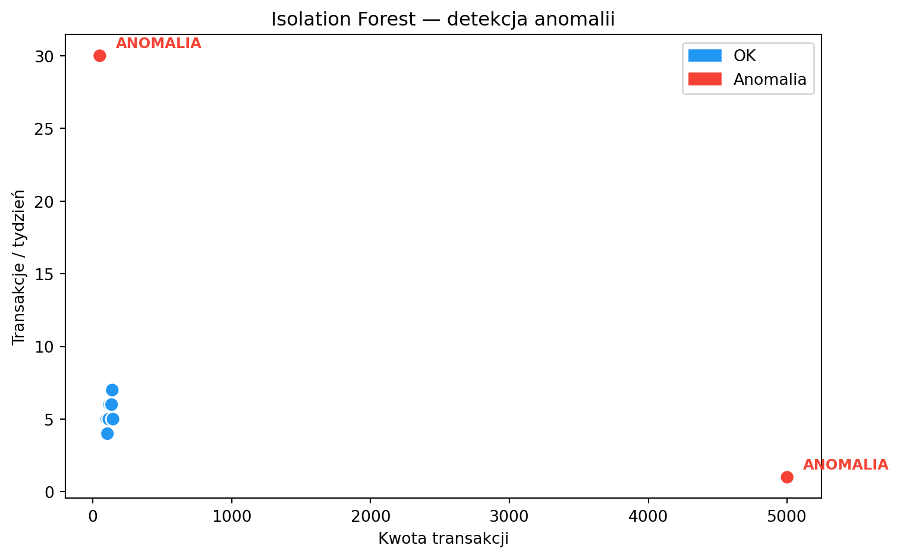

Cel wykładu: Zrozumienie różnic między uczeniem wsadowym (offline) a przyrostowym (online), algorytmu SGD, problemu concept drift, detekcji anomalii oraz wyjaśnialności modeli.
Dwa tryby uczenia maszynowego
Na poprzednich wykładach mówiliśmy o przetwarzaniu wsadowym i strumieniowym. Ten sam podział dotyczy uczenia maszynowego.
Uczenie wsadowe (offline/batch learning)
Model jest trenowany na całym zbiorze danych historycznych. Po wytrenowaniu jest wdrażany do produkcji, gdzie dokonuje predykcji na nowych danych. Gdy pojawiają się nowe dane — model jest retrenowany od zera.
Code
import numpy as npimport pandas as pdfrom sklearn.linear_model import LogisticRegressionfrom sklearn.model_selection import train_test_splitfrom sklearn.metrics import accuracy_scorenp.random.seed(42)# Symulacja: klasyfikacja transakcji (0 = legalna, 1 = podejrzana)n =1000X = np.column_stack([ np.random.uniform(10, 5000, n), # kwota np.random.uniform(0, 23, n), # godzina np.random.randint(1, 50, n) # liczba transakcji w miesiącu])y = ((X[:, 0] >3000) & (X[:, 1] >22) | (X[:, 0] >4000)).astype(int)X_train, X_test, y_train, y_test = train_test_split(X, y, test_size=0.2)# Batch learning: trenujesz raz na całym zbiorzemodel = LogisticRegression()model.fit(X_train, y_train)print(f"Batch accuracy: {accuracy_score(y_test, model.predict(X_test)):.3f}")
Batch accuracy: 0.940
To podejście jest proste i skuteczne, ale ma ograniczenia:
retrenowanie na dużych zbiorach danych jest kosztowne,
model nie uczy się z nowych danych między retrenowaniami,
jeśli wzorce się zmienią (np. nowy typ oszustwa), model będzie nieaktualny do następnego retrenowania.
Uczenie przyrostowe (online learning)
Model uczy się na bieżąco — każda nowa obserwacja (lub mały batch) aktualizuje parametry modelu. Nie trzeba retrenować od zera.
Code
from sklearn.linear_model import SGDClassifierfrom sklearn.preprocessing import StandardScalerscaler = StandardScaler()X_scaled = scaler.fit_transform(X)X_train_s, X_test_s, y_train_s, y_test_s = train_test_split(X_scaled, y, test_size=0.2)# Online learning: model uczy się na kolejnych mini-batchachmodel_online = SGDClassifier(loss='log_loss', random_state=42)batch_size =50accuracies = []for i inrange(0, len(X_train_s), batch_size): X_batch = X_train_s[i:i+batch_size] y_batch = y_train_s[i:i+batch_size] model_online.partial_fit(X_batch, y_batch, classes=[0, 1]) acc = accuracy_score(y_test_s, model_online.predict(X_test_s)) accuracies.append(acc)print(f"Online accuracy po {len(accuracies)} mini-batchach: {accuracies[-1]:.3f}")print(f"Progresja accuracy: {[f'{a:.2f}'for a in accuracies[:5]]} ... {[f'{a:.2f}'for a in accuracies[-3:]]}")
SGD to fundament uczenia online. W klasycznym spadku gradientowym obliczamy gradient na całym zbiorze danych. W SGD — na jednej obserwacji (lub małym batchu).
Intuicja
Wyobraź sobie, że szukasz najniższego punktu w górach we mgle. Gradient Descent to sytuacja, gdy obliczasz nachylenie terenu na podstawie mapy całych gór. SGD to sytuacja, gdy patrzysz tylko pod nogi i robisz krok w kierunku, który wygląda na najbardziej stromy w dół. Każdy krok jest mniej precyzyjny, ale robisz ich dużo więcej i dużo szybciej.
Matematycznie
Dla funkcji straty \(L(\theta)\) i parametrów modelu \(\theta\):
gdzie \(\eta\) to learning rate, a \(i\) to losowo wybrana obserwacja.
Mini-batch SGD — kompromis: obliczamy gradient na małej próbce (np. 32–256 obserwacji): \[\theta_{t+1} = \theta_t - \eta \cdot \frac{1}{|B|} \sum_{i \in B} \nabla L_i(\theta_t)\]
Code
import matplotlib.pyplot as plt# Wizualizacja: SGD vs Batch GD na prostym problemie regresjinp.random.seed(42)X_reg = np.random.uniform(0, 10, 100)y_reg =2.5* X_reg +3+ np.random.normal(0, 2, 100)# Batch GDtheta_batch = [0.0, 0.0] # [slope, intercept]lr =0.001batch_path = [tuple(theta_batch)]for _ inrange(50): pred = theta_batch[0] * X_reg + theta_batch[1] error = pred - y_reg theta_batch[0] -= lr * (2/len(X_reg)) * np.dot(error, X_reg) theta_batch[1] -= lr * (2/len(X_reg)) * np.sum(error) batch_path.append(tuple(theta_batch))# SGDtheta_sgd = [0.0, 0.0]sgd_path = [tuple(theta_sgd)]for _ inrange(50): i = np.random.randint(len(X_reg)) pred_i = theta_sgd[0] * X_reg[i] + theta_sgd[1] error_i = pred_i - y_reg[i] theta_sgd[0] -= lr *2* error_i * X_reg[i] theta_sgd[1] -= lr *2* error_i sgd_path.append(tuple(theta_sgd))fig, (ax1, ax2) = plt.subplots(1, 2, figsize=(12, 4))batch_slopes = [p[0] for p in batch_path]sgd_slopes = [p[0] for p in sgd_path]ax1.plot(batch_slopes, label='Batch GD', linewidth=2)ax1.plot(sgd_slopes, label='SGD', linewidth=1, alpha=0.7)ax1.axhline(y=2.5, color='red', linestyle='--', label='Prawdziwa wartość')ax1.set_xlabel('Iteracja')ax1.set_ylabel('Estymacja slope')ax1.set_title('Zbieżność parametru')ax1.legend()ax2.scatter(X_reg, y_reg, alpha=0.5, s=15)ax2.plot([0, 10], [theta_batch[1], theta_batch[0]*10+ theta_batch[1]], label='Batch GD', linewidth=2)ax2.plot([0, 10], [theta_sgd[1], theta_sgd[0]*10+ theta_sgd[1]], label='SGD', linewidth=2)ax2.set_title('Wynik dopasowania')ax2.legend()plt.tight_layout()plt.show()

SGD jest „zaszumiony” — ale właśnie to jest jego siła w uczeniu online: każda nowa obserwacja natychmiast wpływa na model.
Concept drift — gdy świat się zmienia
Kluczowe wyzwanie uczenia online: rozkład danych zmienia się w czasie (concept drift). Model wytrenowany na danych z zeszłego roku może być bezużyteczny dzisiaj.
Typy driftu:
Nagły (sudden) — np. pandemia zmienia wzorce zakupowe z dnia na dzień.
Stopniowy (gradual) — np. preferencje klientów zmieniają się powoli przez miesiące.
Cykliczny (recurring) — np. sezonowość sprzedaży.
Code
# Symulacja concept drift: nagła zmiana wzorcanp.random.seed(42)# Faza 1: normalne transakcje (kwota < 1000 = OK)X_faza1 = np.random.uniform(10, 2000, 500).reshape(-1, 1)y_faza1 = (X_faza1.ravel() >1000).astype(int)# Faza 2: po zmianie — próg podejrzaności spada do 500X_faza2 = np.random.uniform(10, 2000, 500).reshape(-1, 1)y_faza2 = (X_faza2.ravel() >500).astype(int)from sklearn.preprocessing import StandardScalerscaler = StandardScaler()# Model batch — trenowany na fazie 1model_batch = LogisticRegression()model_batch.fit(scaler.fit_transform(X_faza1), y_faza1)acc_batch_f2 = accuracy_score(y_faza2, model_batch.predict(scaler.transform(X_faza2)))# Model online — adaptuje sięmodel_sgd = SGDClassifier(loss='log_loss')model_sgd.fit(scaler.transform(X_faza1), y_faza1)# Trenowanie online na fazie 2for i inrange(0, len(X_faza2), 10): X_b = scaler.transform(X_faza2[i:i+10]) y_b = y_faza2[i:i+10] model_sgd.partial_fit(X_b, y_b)acc_online_f2 = accuracy_score(y_faza2, model_sgd.predict(scaler.transform(X_faza2)))print(f"Po concept drift:")print(f" Batch model accuracy: {acc_batch_f2:.3f}")print(f" Online model accuracy: {acc_online_f2:.3f}")
Po concept drift:
Batch model accuracy: 0.760
Online model accuracy: 0.972
Figure 1: Concept drift: model batch vs online — dokładność w czasie
Detekcja anomalii
Detekcja anomalii to jedno z najważniejszych zastosowań analizy danych w czasie rzeczywistym. Anomalia (wartość odstająca, outlier) to obserwacja znacznie oddalona od reszty danych.
Metoda klasyczna — IQR
Dla pojedynczej zmiennej możemy użyć rozstępu międzykwartylowego:
Algorytm bazujący na drzewach decyzyjnych (Liu et al., 2008). Kluczowa intuicja: anomalie są łatwiejsze do odizolowania — losowe podziały szybciej oddzielają je od reszty danych.
Code
from sklearn.ensemble import IsolationForest# Symulacja: transakcje bankowe (kwota, częstotliwość tygodniowa)dane = np.array([ [100, 5], [120, 6], [130, 5], [110, 4], [125, 5], [115, 5], [140, 7], [135, 6], [145, 5], [105, 4], [5000, 1], # anomalia: duża kwota, rzadko [50, 30], # anomalia: mała kwota, bardzo często])clf = IsolationForest(contamination=0.15, random_state=42)predykcje = clf.fit_predict(dane)df = pd.DataFrame(dane, columns=["Kwota", "Transakcje/tydzień"])df["Status"] = ["Anomalia"if p ==-1else"OK"for p in predykcje]print(df.to_string(index=False))colors = ['#F44336'if s =='Anomalia'else'#2196F3'for s in df['Status']]fig, ax = plt.subplots(figsize=(8, 5))ax.scatter(df['Kwota'], df['Transakcje/tydzień'], c=colors, s=80, edgecolors='white', zorder=5)for _, row in df[df['Status'] =='Anomalia'].iterrows(): ax.annotate('ANOMALIA', (row['Kwota'], row['Transakcje/tydzień']), textcoords="offset points", xytext=(10, 5), fontsize=9, color='#F44336', fontweight='bold')ax.set_xlabel('Kwota transakcji')ax.set_ylabel('Transakcje / tydzień')ax.set_title('Isolation Forest — detekcja anomalii')import matplotlib.patches as mpatchesax.legend(handles=[mpatches.Patch(color='#2196F3', label='OK'), mpatches.Patch(color='#F44336', label='Anomalia')])plt.tight_layout()plt.show()
Kwota Transakcje/tydzień Status
100 5 OK
120 6 OK
130 5 OK
110 4 OK
125 5 OK
115 5 OK
140 7 OK
135 6 OK
145 5 OK
105 4 OK
5000 1 Anomalia
50 30 Anomalia

Detekcja anomalii w strumieniu
W kontekście real-time nie możemy przeanalizować całego zbioru danych — musimy wykrywać anomalie na bieżąco, w oknie czasowym. Na laboratoriach zbudujemy taki system z Kafką i Sparkiem.
Wyjaśnialność algorytmów
W branżach regulowanych (bankowość, ubezpieczenia, medycyna) nie wystarczy powiedzieć „model odrzucił wniosek kredytowy”. Trzeba wyjaśnić dlaczego. Regulacje takie jak AI Act i RODO wymagają transparentności decyzji algorytmicznych.
LIME wyjaśnia pojedyncze predykcje dowolnego modelu. Działa tak: wprowadza drobne zmiany w danych wejściowych i obserwuje, jak zmienia się wynik. Na tej podstawie buduje prosty, interpretowalny model lokalny (np. regresję liniową), który przybliża zachowanie oryginalnego modelu w otoczeniu danej obserwacji.
Code
from sklearn.ensemble import RandomForestClassifierfrom sklearn.datasets import load_irisiris = load_iris()X_iris, y_iris = iris.data, iris.targetX_tr, X_te, y_tr, y_te = train_test_split(X_iris, y_iris, test_size=0.2, random_state=42)rf = RandomForestClassifier(n_estimators=100, random_state=42)rf.fit(X_tr, y_tr)# Feature importance — prostsza alternatywa dla LIMEimportances = pd.Series(rf.feature_importances_, index=iris.feature_names)print("Ważność cech (Random Forest):")print(importances.sort_values(ascending=False).round(3))print(f"\nNa lab zainstalujemy bibliotekę LIME i zbadamy lokalne wyjaśnienia.")
Ważność cech (Random Forest):
petal length (cm) 0.440
petal width (cm) 0.422
sepal length (cm) 0.108
sepal width (cm) 0.030
dtype: float64
Na lab zainstalujemy bibliotekę LIME i zbadamy lokalne wyjaśnienia.
Podsumowanie
Uczenie wsadowe i przyrostowe to dwa komplementarne podejścia. W praktyce często łączy się je: model bazowy trenowany w trybie batch jest stopniowo aktualizowany w trybie online. SGD umożliwia uczenie na strumieniu danych, ale wymaga uwagi na concept drift i stabilność.
Detekcja anomalii i wyjaśnialność modeli to kluczowe zastosowania ML w real-time analytics — na laboratoriach przełożymy je na praktyczne systemy z Kafką i Sparkiem.
Na następnym wykładzie: Apache Kafka — architektura, producenci, konsumenci, tematy, partycje.
Do przemyślenia: Twój bank trenuje model fraud detection raz w miesiącu (batch). Jakie ryzyko biznesowe niesie takie podejście? Co by się zmieniło, gdyby model uczył się online?